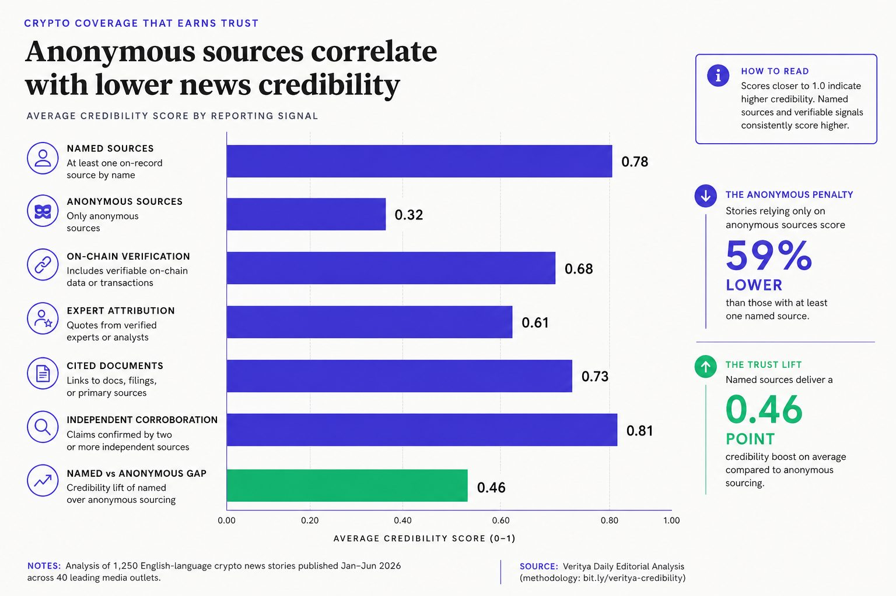
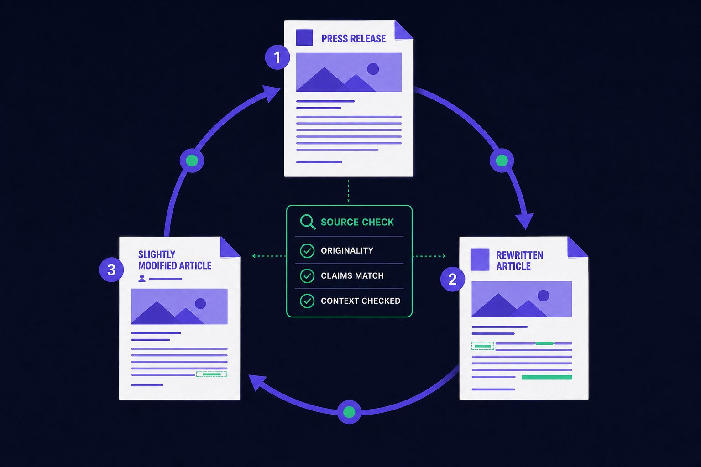
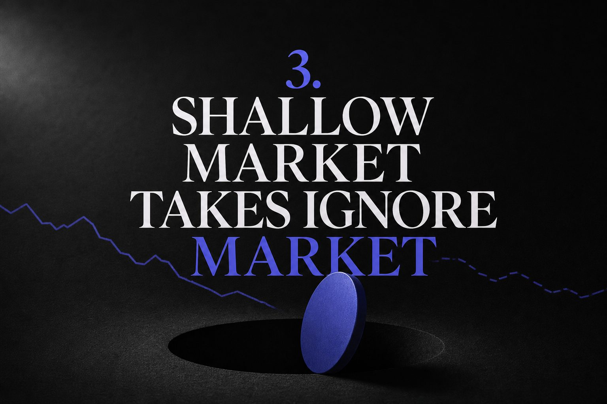
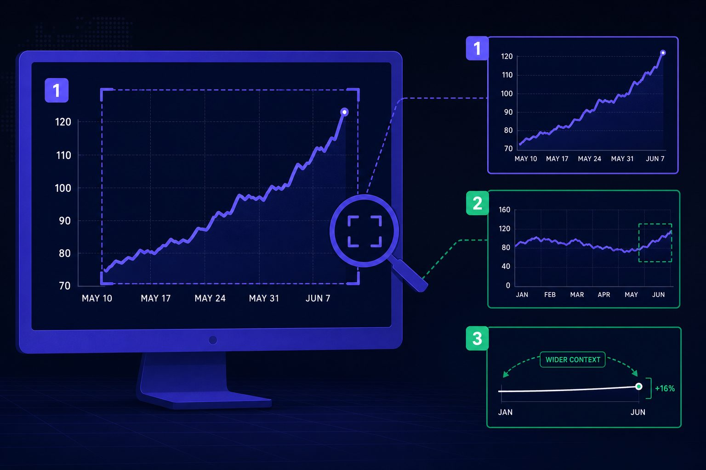

Crypto Analysis
7 Crypto News Red Flags Every Reader Should Know Today

Crypto news can move markets before facts catch up. One weak claim can shape sentiment, trigger trades, and damage reputations within minutes. The real danger is not only bad facts. It is thin sourcing, recycled press releases, and selective charts dressed up as analysis. TRM Labs' 2026 Crypto Crime Report found that illicit crypto activity fell to 1.2% of total transaction volume in 2025. This shows how narrow data points can distort the bigger picture. The same research reveals that roughly 80% of victim losses came from high-yield investment scams. This list breaks down seven red flags that help readers judge credibility, originality, and depth fast.
Table of Contents
1. Anonymous Sources Weaken Crypto News Credibility

1. What this red flag looks like
Weak crypto news often leans on unnamed insiders, citing "people familiar" without explaining why anonymity was needed or how editors verified the claim. The story skips source verification and outside proof entirely.
For example, a report may claim a major exchange faces insolvency. The only support is one vague source. No filing appears. No executive speaks on record. No wallet data backs the claim.
That pattern should raise doubts in crypto journalism. Serious outlets explain why a source stayed unnamed. They also describe how editors checked the claim. Without that context, the article reads more like rumor than reporting.
2. Why it matters for readers and traders
Anonymous sourcing matters more during fast market swings. A vague claim can move prices fast. It can also give cover for agenda pushing. In extreme cases, it can feed market manipulation.
For example, a thinly sourced headline about a token listing can spark panic buying. Minutes later, traders may find no exchange notice at all. TRM Labs warns that red flags often cluster around deception and pressure tactics seen in crypto scams and related schemes: Crypto Scam Guide: Types, Red Flags & How to Avoid Them.
Research from Red flags in crypto transactions | Merkle Science shows suspicious gains can reach 2010% in flagged contexts. Merkle Science also notes that rules may trigger when a wallet moves more than 90% of funds quickly, which shows how fast risky behavior can surface during volatile events: Red flags in crypto transactions | Merkle Science.
3. How to verify before trusting the claim
Readers can test credibility with three checks. First, look for independent confirmation from another outlet. Second, look for on-record context from executives, filings, or chain data. Third, look for evidence beyond one anonymous voice.
If those checks fail, caution is smarter than urgency. For a deeper process, see How to Research Cryptocurrency Market News Before Making Investment Decisions. Readers comparing outlet standards can also review CoinDesk vs The Block: Which Crypto News Site Offers More?.
2. Recycled Press Releases Masquerade as Reporting

What this red flag looks like
Some crypto news stories read like polished ad copy. The headline promises reporting. The body often repeats a company press release almost line by line. That includes token launch claims, funding news, partnership language, and exchange announcements. The outlet adds little beyond a rewrite.
For example, a project says its launch is “revolutionary.” A weak article repeats that word, quotes the founder, and stops there. It does not ask who funded the campaign, who benefits from the token, or what evidence supports demand. In poor crypto journalism, promotion can wear a reporting costume.
That helps explain why so many crypto stories read like advertisements. Press releases are fast, cheap, and ready-made. In a 24-hour market, speed often beats verification.
Why it matters for market understanding
Recycled PR distorts importance. A small launch can look like a major market event. A routine listing can seem like broad validation. That framing can pull attention away from real signals, such as liquidity, governance risks, or prior enforcement history.
The danger grows when hype shields conflicts of interest. A sponsored narrative may never say who paid for distribution. That gap can amplify crypto scams or hide warning signs around insiders, treasury controls, or unrealistic promises. TRM Labs’ crypto scam guide notes that persuasive marketing and false legitimacy often sit at the center of fraud.
For example, compliance teams watch for suspicious structuring in transactions. According to Merkle Science, cash activity above $10,000 triggers reporting attention. The same source describes split transfers such as $3,333 across multiple wallets as another warning pattern. Hype-heavy coverage rarely adds that kind of context.
How to verify before trusting the claim
The simplest test is side-by-side comparison. Open the original press release, then read the article again. Check whether the outlet added fresh sourcing, skeptical questions, or new facts. If the wording, order, and claims match too closely, the piece likely adds little value.
Next, look for real reporting. Did the writer call an outside analyst, review on-chain data, or note legal risks? Did the story explain what remains unknown? Readers who want stronger filters can also review How to Research Cryptocurrency Market News Before Making Investment Decisions for a practical verification process.
Strong reporting tests claims. Weak reporting republishes them.
3. Shallow Market Takes Ignore Market Manipulation

1. What this red flag looks like
Weak crypto news often blames one headline for a sudden move. It says prices rose on policy talk, hacks, or ETF chatter. That story sounds neat, but markets rarely move for one reason alone.
A stronger read checks liquidity, leverage, and positioning first. It also checks whale transfers, exchange inflows, and on chain data. For example, a token may jump after bullish news while thin order books do most of the work.
That gap matters because bad crypto news affects prices by shaping fast sentiment. Traders react to the headline, then others chase the candle. In thin markets, that reflex can magnify market manipulation.
2. Why it matters for market understanding
Shallow price action analysis trains readers to confuse timing with cause. A move can follow a headline without being driven by it. The real trigger may be liquidations, stop hunts, or a large holder rotating supply.
For example, a sharp selloff may get framed as panic over one comment. Yet exchange flow data may show coins moved onto venues hours earlier. That points to planned selling, not sudden fear.
This matters most in reactive markets with weak depth. Small pushes can distort sentiment and price discovery. According to Merkle Science, illicit funds are often split into transfers as small as $1, which shows how activity can be disguised across wallets.
3. How to verify before trusting the claim
Readers should test any market story before accepting it. First, check whether the piece cites several drivers. Next, check the time horizon, since a five-minute spike and weekly trend need different explanations.
Then look for evidence behind the claim. Useful signs include derivatives data, funding rates, exchange flows, and on chain data. Research from Merkle Science notes that trading above $100,000 can be a red flag in context, which reinforces the need to examine behavior, not headlines alone.
If the article offers one cause and no supporting market data, caution is warranted. For a deeper framework, see Why Crypto Prices Move Suddenly (And How to Investigate) and How to Research Cryptocurrency Market News Before Making Investment Decisions.
4. Misleading Chart Framing Distorts Crypto News

What this red flag looks like
The biggest red flags in crypto charts are usually visual, not technical. A chart may show a tiny time window, cut off the y-axis, hide the source, or compare one token against a weak benchmark. Those choices shape emotion fast. They can force a bullish or bearish story before the reader checks the math.
For example, a headline may claim a token is “surging again,” but the chart only shows three hours of trading. The full month may look flat. Another common trick uses arrows, circles, and dramatic labels to imply certainty. In weak crypto journalism, that styling replaces chart context with theater.
A second warning sign is mismatch. The chart may show price, while the article talks about adoption, inflows, or user growth. That gap matters. It turns a visual into persuasion rather than evidence.
Why it matters for market understanding
Bad chart framing can make normal volatility look rare. It can also make a modest dip look like collapse. In fast-moving crypto news analysis, that distortion can feed hype, panic, and rushed reactions. It also creates space for narrative-led market manipulation.
For example, a trader may share a cropped chart to imply a breakout, even though the asset still trails Bitcoin over a longer range. Readers then react to the frame, not the market. That same tactic also appears around crypto scams, where selective visuals help weak projects look established.
Research from Merkle Science shows bad actors often break activity into smaller pieces to avoid detection. The firm gives examples involving transfers under $1,000 and stolen funds spread across 1 million smaller paths. That pattern is different from chart framing, but the lesson is similar: selective presentation can hide the real picture.
How to verify before trusting the claim
Readers should widen the time range first. A one-day chart should become one month, six months, and full history. Next, check the benchmark. A token may look strong against cash, yet weak against Bitcoin or the broader market.
Then confirm the source data and labels. The axes should be clear. The unit should match the article’s claim. For a deeper check, see Why Crypto Prices Move Suddenly (And How to Investigate) and How to Research Cryptocurrency Market News Before Making Investment Decisions. If the chart and story do not align, the framing is the real red flag.
5. How to Apply These Red Flags: A Practical Filter
The core lesson is simple. Not every fast headline deserves trust. Strong crypto news usually shows its work. Weak coverage hides it. The biggest danger comes when unnamed sources drive the story and no one proves the claims. That problem gets worse when outlet copy tracks a project announcement too closely. In both cases, narrative can spread before evidence arrives. That gap matters in crypto. Prices move fast. Reputations shift faster. Once a claim travels, correction rarely catches the same audience.
The second lesson is more subtle. The most common mistakes often look the most polished. Thin market explanations can sound smart while skipping basic context. A sharp chart can appear objective while steering the reader toward a preset conclusion. That is why shallow market takes and selective chart framing deserve extra suspicion. They borrow authority from tone, jargon, and visuals, but they often rest on weak logic. For readers, that means style should never outrank method. A clean layout does not rescue a bad argument. A confident headline does not replace real reporting.
What matters most is consistency. Readers do not need perfect expertise in every token, exchange, or protocol. They need a repeatable filter. The seven red flags covered in this guide work as that filter. They give a practical screen before sharing a link, reacting on social media, or placing a trade. A few quick checks can expose whether the piece verifies claims, adds original reporting, explains price action with real depth, and presents charts with honest context. Used often, that habit can reduce costly mistakes and improve judgment across the broader crypto journalism cycle.
Better crypto news will always exist, but it rarely comes from speed alone. It comes from verification, context, and restraint. Want to learn more? Learn More to explore how Verity A Daily can help.